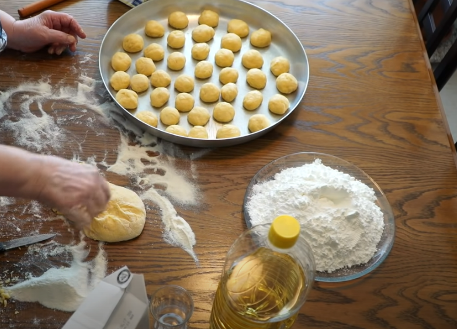

|
Bakllava është njëra nga ëmbëlsirat
tradicionale
të kuzhinës Shqiptare.
Ndonëse bakllava ka prejardhje Turke, përgatitja
e saj është
një
trashëgimi e vogël
që përcillet prej gjeneratës në gjeneratë edhe te ne.
|
Përbërësit e brumit:
- 5 vezë – 1 e plotë dhe 4 të kuqtë
- 1 gotë vaj
- 1 gotë qumësht
- 1 lugë të mesme sheqer
- 1 maje thike kripë
- Rreth 500 gr miell
- Rreth 400 gr arra të qëruara e të coptuara
- 200 – 300 gr gjalpë
|
|
Përbërësit e shërbetit:
- 2 kavanoza të mëdha me sheqer rreth 1.2 kg
- 2 kavanoza të mëdha me ujë.
 |
| |
Udhëzimet:
Bakllava është njëra nga ëmbëlsirat tradicionale të kuzhinës Shqiptare.
Ndonëse bakllava
ka
prejardhje Turke, përgatitja e saj është një trashëgimi e vogël që përcillet prej
gjeneratës
në gjeneratë edhe te ne.
Për të përgatitur bakllavën, së pari duhet ta përgatisni brumin.
Brumi është i
përbërë nga
vezët, vaji, qumështi dhe mielli.
Kjo përzierje lihet e mbuluar
me pecetë kuzhine
për 1-2 orë.
Pastaj ky brum merret dhe ndahet në 50 kuleqë, të vegjël (sa e kuqja e vezës).
Merren nga 10 kuleqë dhe të hollohen një nga një me nisheste.
Pastaj merren që të 10
kuleqët
dhe ndërmjet u vihet nga pak nisheste.
Këtë
veprim e
përsëritni pra 5 herë, derisa ti radhitni kështu 50 kuleqët e bërë.
Dy nga petët e
holluara
shtrihen në tepsi, vihen arrat e coptuara dhe sipri vihen tri petët e tjera.
Pasi që
të
vihen të gjitha petët, bakllava prehet në copëza të pjerrëta.
Pasi të prehet bakllava,
ngadalë ia vini përsipëri gjalpën e shkrirë.
Futeni në furrë të ngrohtë dhe e piqni për 2-3 orë në 150 C .
| |
 |
 |
Sherbeti i Bakllavës:
|
Të vlohet uji rreth 30 minuta derisa të trashet sherbeti. Bakllava duhet të jetë e
ftohtë kur përvlohet me sherbetin e nxehtë.
Përfundimisht e lini të ftohet për tu
servuar.
|